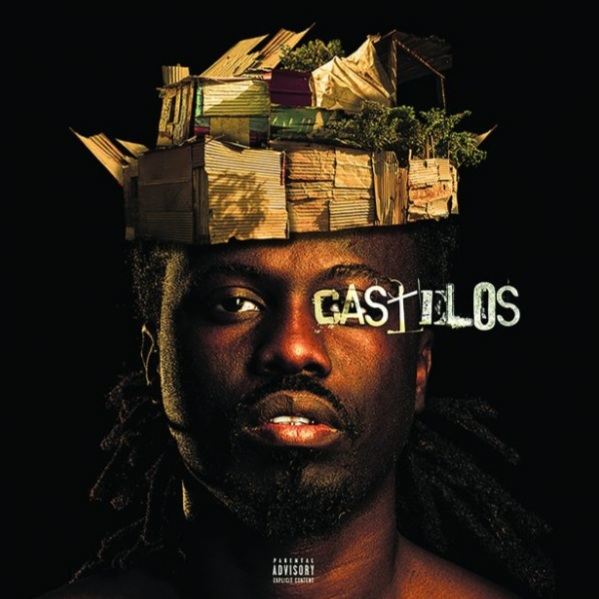

Osvaldo Moniz também conhecido por Prodígio, é um rapper nascido em 1988, integrante do grupo de Hip-Hop Forca Suprema.
Prodígio foi obrigado a emigrar para Portugal com tenra idade devido a vários problemas de saúde, ficando na companhia da irmã e de um irmão mais velho, de seu nome Luís. Foi este último quem lhe passou o “bichinho” do hip-hop, numa altura em que este ainda dava os primeiros passos em Portugal: aos dez anos, a dieta musical de Prodígio era já composta por nomes como Gabriel o Pensador e Boss AC, sendo que daí até se começar a dedicar aos seus próprios freestyles foi um pequeno salto. Prodígio começou a escrever rimas aos 12 anos de idade, entrando no mundo do Hip-Hop em 2001.
Prodígio começou a trilhar o caminho para o sucesso com o lançamento da sua primeira mixtape O Alquimista em 2011, que recebeu várias sequências. Dentre vários prémios, os mais recentes foram o de Melhor Álbum do Ano, com o álbum “Prodígios” e Rapper MVP, ambos do Angola Hip Hop Awards.
Playa
css/Prodigo_-__PLAYA_(Ft_NGA)_Letra.mp3
N_o_acordes
css/7_n_o_acordes.mp3